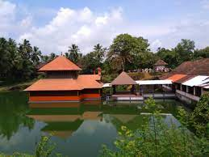
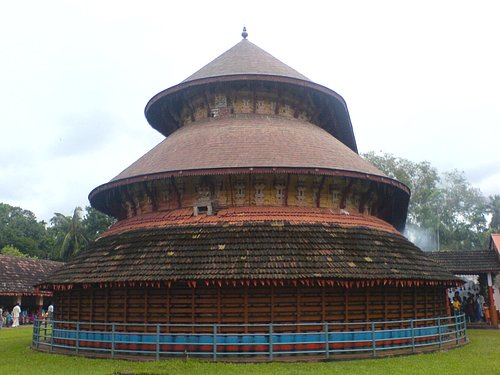
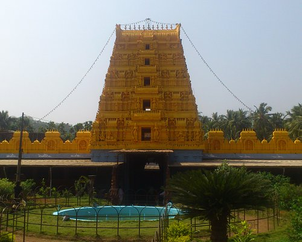

HOT TOURIST SPOTS





Kasargod is a small coastal town in Northern Pary of Kerala displaying a delightful blend of various religions, culture and bounty of nature. Blessed with majestic forts, lofty hills, beautiful offbeat backwaters, temples and pristine beaches, the town oozes charm and tranquillity from every aspect. It is gaining popularity among people from nearby cities owing to the presence of luxury resorts. Kasargod is also known for its rich and glorious past, is considered to be home to some of the best-preserved forts in Kerala. The variety of art and culture of the town speaks volume about its diversity. In fact, one can hear about seven languages spoken in the town, Tulu, Malayalam, Kannada, Tamil and Konkani being the most famous ones. Adorned with several tourist attractions, this family-friendly destination with booming coir and handloom industry is worth a visit.